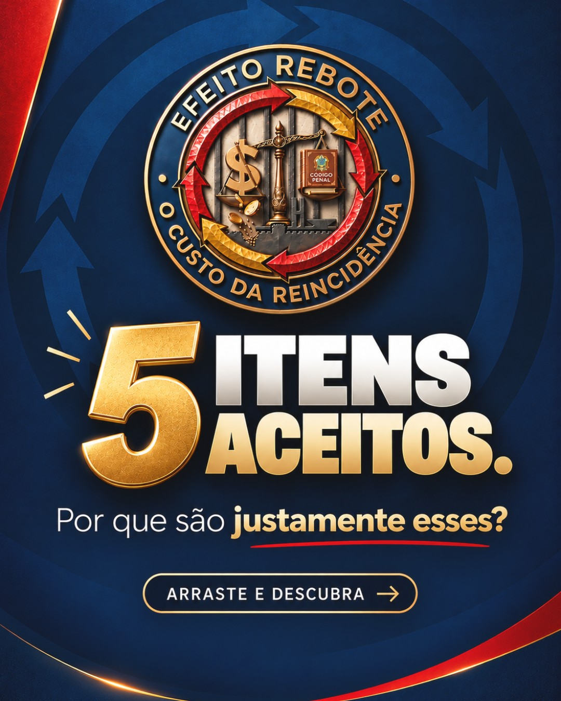
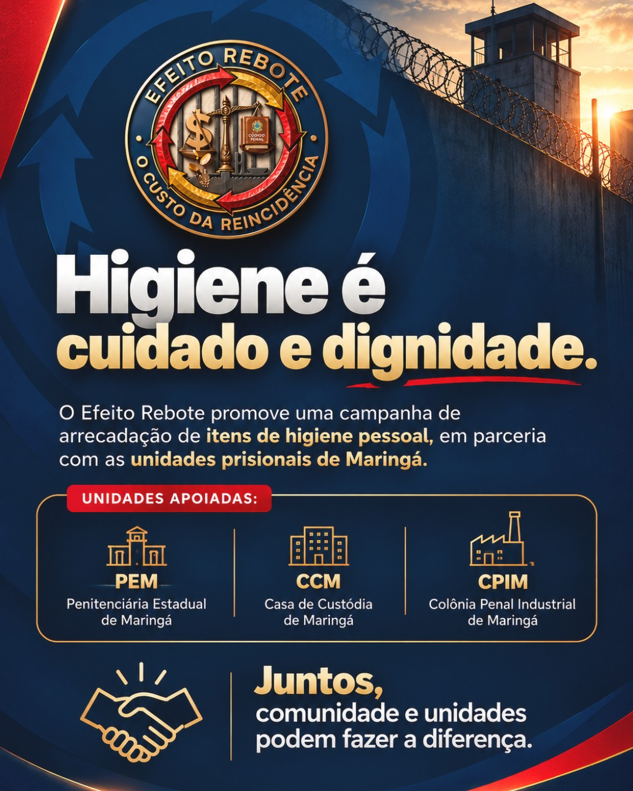
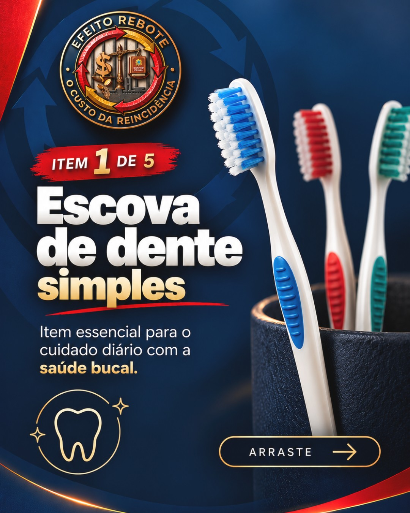
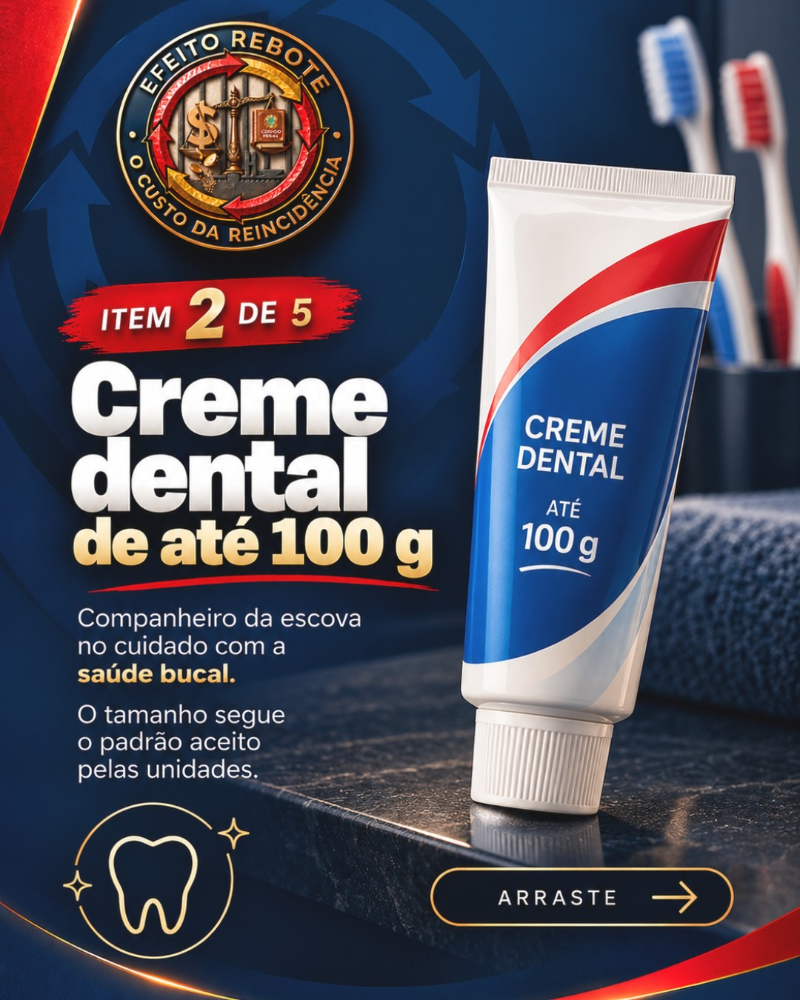
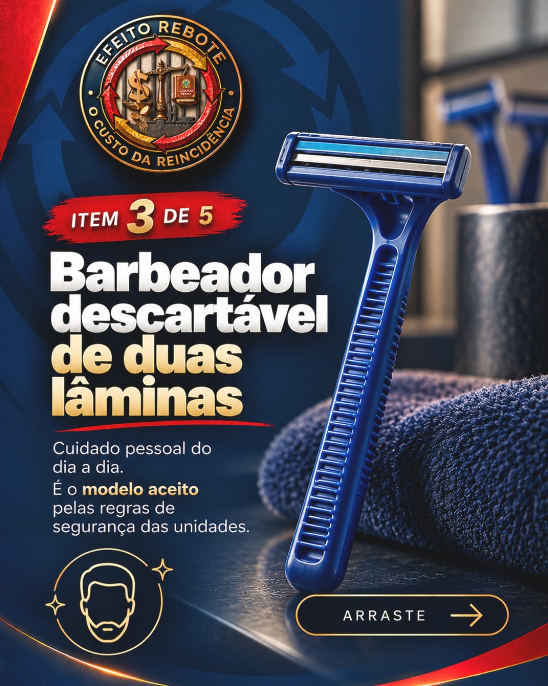
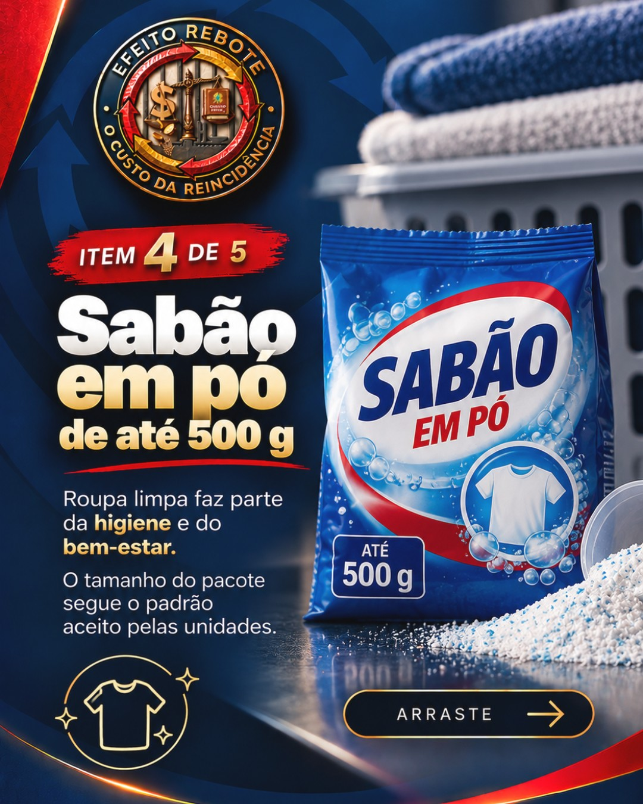
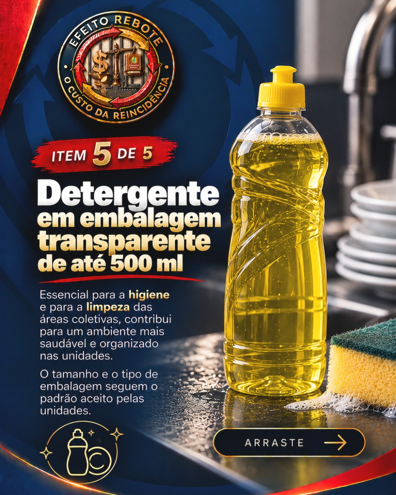
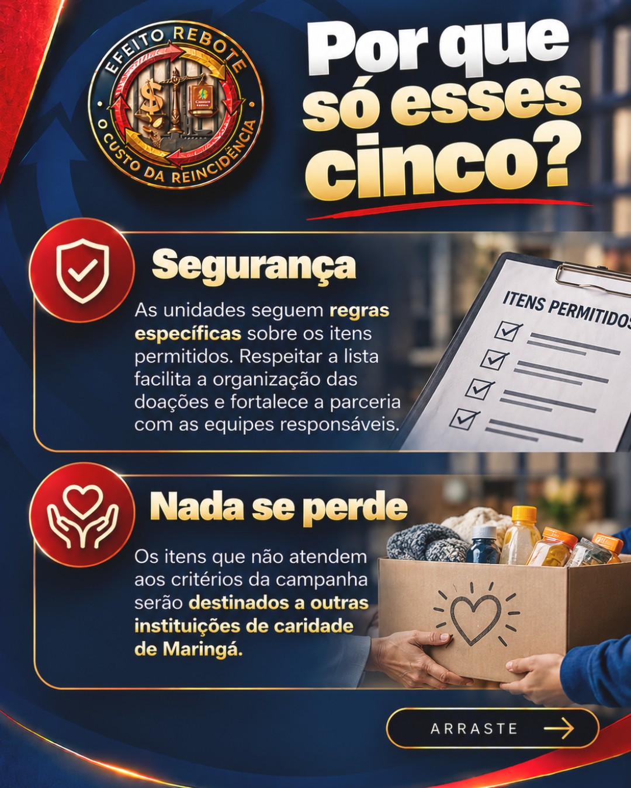
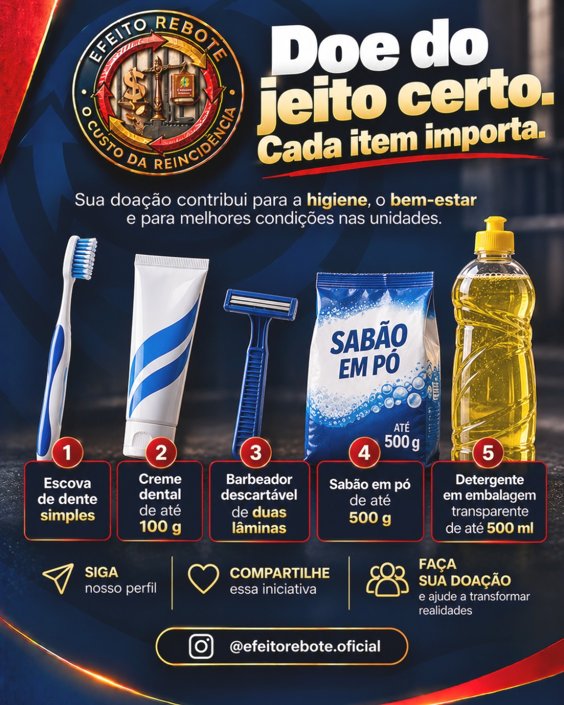

18hFeed · carrossel
Os 5 itens da arrecadação











Suba os 9 slides nesta ordem.
Ver legenda
Três destes cinco itens faltavam na Penitenciária Estadual de Maringá na inspeção da Defensoria Pública do Paraná, em maio de 2025. Neste carrossel, cada item aparece com a sua regra. Tamanho e embalagem seguem as regras de segurança das unidades, e um item fora do padrão pode não entrar. O sabão em pó entrou na lista porque a assistência material prevista na lei inclui vestuário, e roupa limpa depende dele. Salve para consultar depois. #EfeitoRebote #SistemaPrisional #ExecuçãoPenal #DireitosHumanos #ExtensãoUniversitária